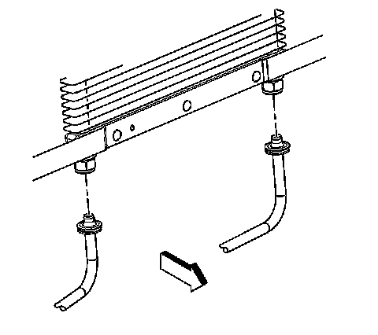
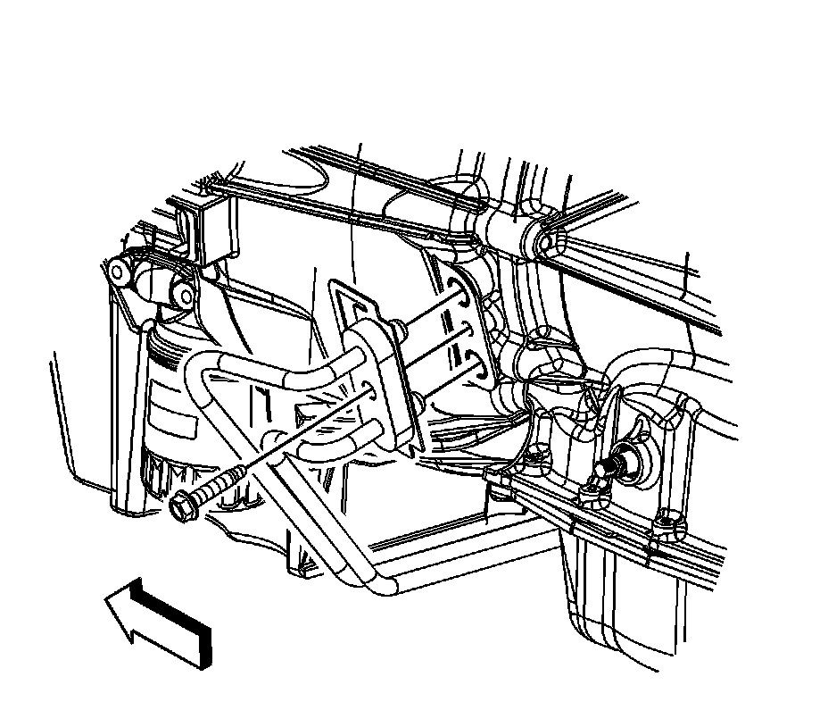

Transmission Fluid Cooler Hose/Pipe Replacement
Transmission Fluid Cooler Hose/Pipe Replacement
Removal Procedure
1. Remove the front grill assembly.

2. Remove the transmission fluid cooler hose from the auxiliary oil cooler.
3. Remove the transmission fluid cooler hose from the radiator.
4. Raise the vehicle. Refer to Lifting and Jacking the Vehicle.
5. Remove the engine protection shield.

6. Remove the cooling lines from the transmission.
7. Remove the oil cooling lines from the vehicle.
Installation Procedure
1. Install the transmission oil cooler lines to the vehicle.
2. Install the cooling lines to the transmission.
3. Install the engine protection shield.
4. Lower the vehicle.
5. Install the transmission fluid cooler hose to the radiator.
6. Install the transmission fluid cooler hose to the auxiliary oil cooler.
7. Install the front grill assembly.